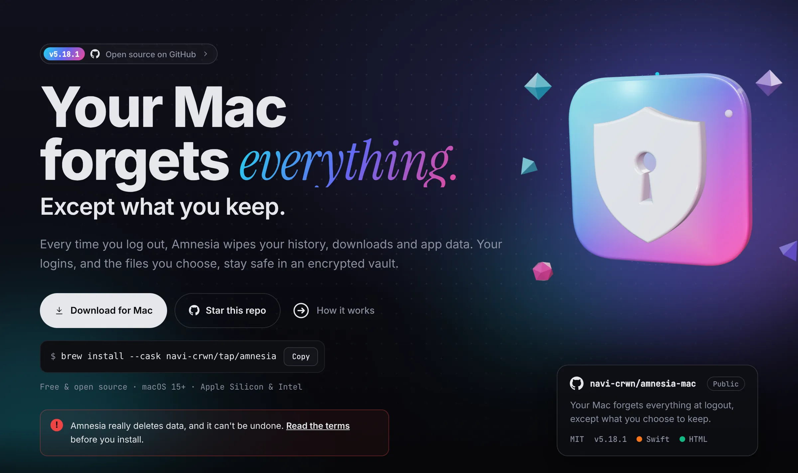
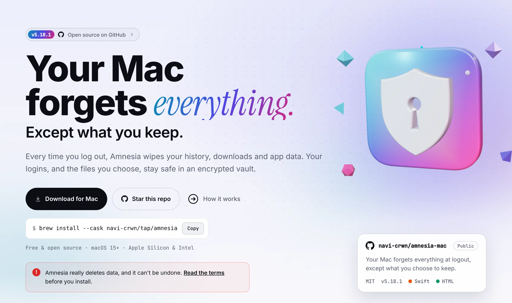

macOS app · SwiftAplikasi macOS · Swift
Amnesia
Your Mac forgets everything at logout: history, downloads, caches, app data. Your logins and the files you choose stay safe in an encrypted vault, back with one password.Mac-mu melupakan semuanya saat logout: riwayat, unduhan, cache, data aplikasi. Login dan file pilihanmu tetap aman di vault terenkripsi, kembali dengan satu password.
- AES-256 Profile Vault for Chrome, WhatsApp, dev tools; panic word destroys itProfile Vault AES-256 untuk Chrome, WhatsApp, tool developer; kata panik menghancurkannya
- Backups to USB, your own server over SSH, or Google Drive, Dropbox, OneDriveBackup ke USB, server sendiri lewat SSH, atau Google Drive, Dropbox, OneDrive
- Homebrew tap, self-updates verified with SHA-256, and a Windows versionHomebrew tap, update otomatis diverifikasi SHA-256, dan versi Windows
★ —releaserilis —updateddiperbarui —

